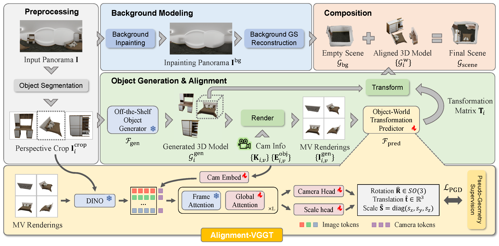
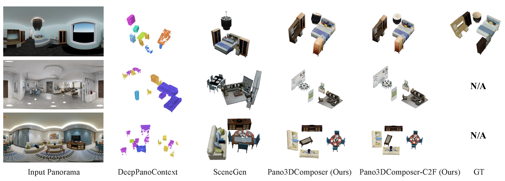
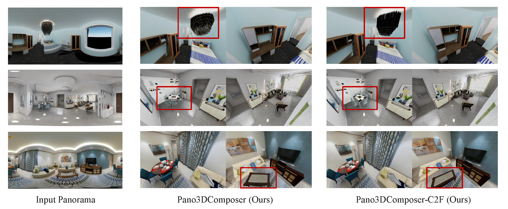

Current compositional image-to-3D scene generation approaches construct 3D scenes by time-consuming iterative layout optimization or inflexible joint object-layout generation. Moreover, most methods rely on limited field-of-view perspective images, hindering the creation of complete 360° environments.
To address these limitations, we design Pano3DComposer, an efficient feed-forward framework for panoramic images. To decouple object generation from layout estimation, we propose a plug-and-play Object-World Transformation Predictor. This module converts the 3D objects generated by off-the-shelf image-to-3D models from local to world coordinates. To achieve this, we adapt the VGGT architecture to Alignment-VGGT by using target object crop, multi-view object renderings and camera parameters to predict the transformation. The predictor is trained using pseudo-geometric supervision to address the shape discrepancy between generated and ground-truth objects.
For input images from unseen domains, we further introduce a Coarse-to-Fine (C2F) alignment mechanism for Pano3DComposer that iteratively refines geometric consistency with feedback of scene rendering. Our method achieves superior geometric accuracy for image/text-to-3D tasks on synthetic and real-world datasets. It can generate a high-fidelity 3D scene in approximately 20 seconds on an RTX 4090 GPU.

Overview of Pano3DComposer. The framework takes a panoramic image I as input and generates a 3D scene Gscene through four stages: (i) Preprocessing, (ii) Object Generation & Alignment, (iii) Background Modeling, and (iv) Composition.

Fig. 1: Visualization of panorama-to-3D scene composition results without background. Row 1: 3D-FRONT test set; Row 2: Structured3D test set; Row 3: real-world panoramas.

Fig. 2: Visualization of panorama-to-3D scene composition results with background. The figure presents multi-view renderings of composed 3D scenes generated by our method. Row 1: 3D-FRONT test set; Row 2: Structured3D test set; Row 3: real-world panoramas.
Multi-view renderings of 3D scenes generated by Pano3DComposer from diverse panoramic inputs.
Scene 01
Scene 02
Scene 03
Scene 04
Scene 05
Scene 06
Scene 07
Scene 08
Scene 09
Scene 10
Scene 11
Scene 12
Scene 13
Scene 14
Scene 15
Scene 16
Scene 17
Scene 18
Scene 19
Scene 20
@inproceedings{qiu2026pano3dcomposer,
author = {Qiu, Zidian and Wu, Ancong},
title = {Pano3DComposer: Feed-Forward Compositional 3D Scene Generation from Single Panoramic Image},
booktitle = {Proceedings of the IEEE/CVF Conference on Computer Vision and Pattern Recognition (CVPR)},
year = {2026},
}